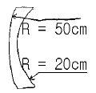
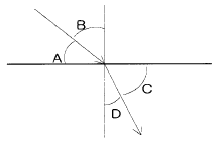
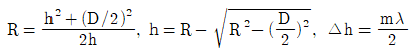
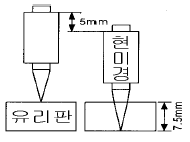
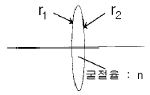
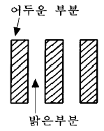
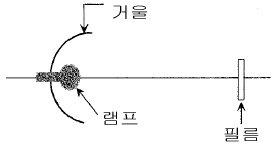
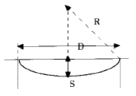

광학기능사 (2002-04-07 기출문제)
1과목: 광학일반
1. 다음 중 고전광학의 기본원리가 아닌 것은?
- Fermat의 원리
- 중첩의 원리
- Huygens의 원리
- Hamilton의 원리
(정답률: 알수없음)

2. 굴절율이 1.5인 유리에서 굴절율이 1.0인 공기로 60도의 각도로 입사하는 빛에 대한 설명중 틀린 것은?
- 굴절광의 진폭은 입사광의 진폭의 1/2과 같다.
- 반사광의 세기는 입사광의 세기와 같다.
- 반사각은 입사각과 같다.
- 투과하는 빛의 세기는 0 이다.
(정답률: 알수없음)
3. 파장이 500nm인 빛의 굴절율이 1.39인 비누막을 수직으로 투과한다. 투과하는 빛의 세기가 최소가 되는 비누막 중 가장 얇은 두께는 대략 얼마인가?
- 90nm
- 180nm
- 270nm
- 360nm
(정답률: 알수없음)
4. 다음에서 Fraunhofer선의 기호와 파장을 잘못 연결한 것은?
- C line : 656.3 nm
- D line : 546.1 nm
- F line : 486.1 nm
- G line : 430.7 nm
(정답률: 알수없음)
5. 높은 온도의 물체는 빛을 방출한다. 이를 흑체복사로 근사할 수 있을 때 물체의 온도와 방출되는 빛과의 관계에 관한 설명중 올바른 것은?
- 방출되는 스펙트럼에서 최대 세기의 진동수는 절대온도에 비례한다.
- 방출되는 스펙트럼에서 최대 세기의 파장은 절대온도에 비례한다.
- 방출되는 빛에너지의 총량은 절대온도의 제곱에 비례한다
- 방출되는 빛에너지의 총량은 절대온도의 제곱에 반비례한다
(정답률: 알수없음)
6. 앞면의 곡률반경이 50cm, 뒷면의 곡률반경이 20cm인 안경렌즈의 굴절능을 구하시오. (단, 재질의 굴절율은 1.4 이고, 렌즈의 두께는 0에 가깝다고 하자)

- -1.2 디옵터
- -0.16 디옵터
- 0.16 디옵터
- 1.2 디옵터
(정답률: 알수없음)
7. 다음 중 빛의 진행하는 속도가 가장 늦은 매질은?
- 굴절율이 1.33 인 물
- 굴절율이 1.46 인 수정
- 굴절율이 1.52인 크라운유리
- 굴절율이 2.42인 다이아몬드
(정답률: 알수없음)
8. 다음 중 전반사가 일어날 수 있는 경우는? (단 공기의 굴절율은 1, 물의 굴절율은 1.33, 유리의 굴절율은 1.5로 한다.)
- 공기에서 물로 입사할 때
- 물에서 유리로 입사할 때
- 유리에서 물로 입사할 때
- 공기에서 유리로 입사할 때
(정답률: 알수없음)
9. 다음 중 빛의 분산현상을 이용하는 것은?
- 간섭계
- 투영현미경
- 프리즘 분광기
- 광학식 곡률측정기
(정답률: 알수없음)
10. 광학계(가시광선용 결상)의 설계 및 분석에서 기준이 되는 빛의 파장은?
- 656.3 nm
- 587.6 nm
- 546.0 nm
- 486.1 nm
(정답률: 알수없음)
11. 구경이 25mm이고 초점거리가 100mm인 이상적인 렌즈가 있을 때, 파장 0.5μm인 빛에서 레일리(Rayleigh) 기준에 따른 렌즈의 공간분해 한계는?
- 1.22μm
- 2.44μm
- 3.66μm
- 4.88μm
(정답률: 알수없음)
12. 그림에서 기호와 이름이 옳게 연결된 것은?

- A = 경계각
- B = 입사각
- C = 굴절각
- D = 임계각
(정답률: 알수없음)
13. 아베수(Abbe number)에 대한 설명중 옳지 않은 것은?
- 이 값은 유리가 빛을 분산시키는 능력을 나타낸다.
- 이 값이 큰 유리로 프리즘을 만들면 빛이 넓게 퍼진다.
- ne-1/nF-nC와 같이 계산된다.
- 이 값이 50보다 큰 유리를 크라운 유리라 한다.
(정답률: 알수없음)
14. 스펙트럼에 관한 다음 설명 중 틀린 것은?
- 파장이 클수록 투과형 회절발(grating)에 의한 회절각이 크다.
- 회절차수가 클수록 회절발(grating)에 의한 스펙트럼선폭이 커진다.
- 수소가스의 스펙트럼은 여러 가지 선으로 구성되어 있다.
- 파장이 클수록 프리즘에 의한 편의각이 크다.
(정답률: 알수없음)
15. 다음 광선중 에너지가 가장 큰 것은?
- 자외선
- 빨강색
- 파랑색
- 적외선
(정답률: 알수없음)
2과목: 광학가공
16. 유리속에서 파장이 가장 긴 단색광은 다음 중 어느 색인가?
- 빨강색
- 노랑색
- 초록색
- 파랑색
(정답률: 알수없음)
17. 다음 중 틀린 것은?
- 동공의 크기는 홍채에 의해 조절된다.
- 수정체의 굴절률은 위치에 따라 다르다.
- 수정체의 곡률은 모양체근에 의해 조절된다.
- 맹점에는 칼라인식 세포가 상대적으로 많다.
(정답률: 알수없음)
18. 굴절률이 1인 매질에서 1.5인 매질로 빛이 입사할 때 반사율은 얼마인가?
- 4%
- 8%
- 20%
- 66%
(정답률: 알수없음)
19. 백색광이 물에 입사할 때, 굴절각은 각각의 색에 따라 달라진다. 굴절각이 큰 색부터 작은 색으로 올바르게 기술된 것은?
- 빨강 → 노랑 → 파랑 → 보라
- 노랑 → 파랑 → 보라 → 빨강
- 파랑 → 보라 → 노랑 → 빨강
- 보라 → 파랑 → 노랑 → 빨강
(정답률: 알수없음)
20. 낮에는 하늘이 파랗게 보이다가 저녁 무렵에는 붉게 노을이 진다. 어떤 성질로 이 현상을 설명할 수 있는가?
- 편광
- 산란
- 간섭
- 회절
(정답률: 알수없음)
21. 패브리-페롯 간섭계의 분해능을 높이기 위한 적절한 방법은?
- 반사경의 반사율을 높인다.
- 반사경의 크기를 증가시킨다.
- 반사경의 반사율을 낮춘다.
- 반사경의 크기를 줄인다.
(정답률: 알수없음)
22. 일반 현미경에서 배율이 5× 로 표시된 대물렌즈의 초점거리는 얼마인가? (단, 경통의 길이는 160mm 이다.)
- 16mm
- 25mm
- 32mm
- 50mm
(정답률: 알수없음)
23. 다음 중 빛을 한 곳으로 모을 수 있는 것은?
- 편광 필터
- 볼록 렌즈
- 전반사 프리즘
- 볼록 거울
(정답률: 알수없음)
24. 파동의 반사법칙으로 틀린 설명은?
- 파동이 반사할 때 파동의 속도, 파장 진동수는 변하지 않는다.
- 파동이 일부 흡수될 때 반사파의 파동에너지는 줄고, 진폭이 작아진다.
- 파동에 반사파와 투과파의 진폭은 입사파의 진폭과 동일하다.
- 항상 파동의 진행 방향은 파면에 수직한 방향이다.
(정답률: 알수없음)
25. 정지하고 있는 배에서 물결이 보였다. 마루에서 다음 마루까지 거리가 100㎝이고 마루가 배를 통과하는 주기는 2초 였다. 이 물결의 속도는?
- 20㎝/s
- 25㎝/s
- 50㎝/s
- 100㎝/s
(정답률: 알수없음)
26. 그림은 평면 원기와 가공제품의 간섭무늬를 나타낸 것이다. 이 중에서 평면도가 가장 좋은 것은?
(정답률: 알수없음)
27. 광학유리의 가공 공정중 생기는 결함이 아닌 것은?
- 크랙
- 맥리
- 디그
- 스크래치
(정답률: 알수없음)
28. 다음 중 렌즈의 표면 결함이 아닌 것은?
- 디그
- 부식
- 기포
- 스크래치
(정답률: 알수없음)
29. 광학 유리의 재질 결함이 아닌 것은?
- 기포
- 맥리
- 왜곡
- 형상
(정답률: 알수없음)
30. 직경(D) 20mm 렌즈의 곡률반경(R)이 15mm이다. 뉴톤링의 허용량이 6본(本)이라 할 때 곡률반경 R의 공차는? (단,

, 사용된 파장(λ )은 587.6㎚이다.)- ± 0.003
- ± 0.0⑤
- ± 0.01
- ± 0.013
(정답률: 알수없음)
3과목: 광학기기
31. 다음 중 렌즈의 생산공정을 순서대로 나열한 것은?
- 센터링 → 커브 제네레이션 → 연마 → 코팅
- 연마 → 센터링 → 커브 제네레이션 → 코팅
- 커브 제네레이션 → 연마 → 센터링 → 코팅
- 코팅 → 커브 제네레이션 → 연마 → 센터링
(정답률: 알수없음)
32. 다음 중 의미하는 물리량이 나머지 셋과 다른 것은?
- 1Torr
- 760mmHg
- 1기압
- 1013mmbar
(정답률: 알수없음)
33. 다음 중 코팅하였을 때 가시광선과 적외부(0.4㎛∼1.0㎛)에서 반사율이 가장 큰 것은?
- Ag
- Al
- ZnSe
- Cu
(정답률: 알수없음)
34. 커브 제너레이터에서 작업을 잘못하거나 센터링을 잘못해서 혹은 접착이 잘못되어 렌즈의 광축과 기계축이 맞지 않게 되는 것을 무엇이라 하는가?
- 스크래치(Scratch)
- 디그(Dig)
- 편심불량(Decenter)
- 모래자국
(정답률: 알수없음)
35. 그림과 같이 현미경을 수직으로 사용하여 두께가 7.5mm인 유리판의 윗면과 밑면을 보았을 때 경통의 이동거리가 5mm이었다. 유리판의 굴절률은 얼마인가?

- 1.0
- 1.5
- 2.0
- 2.5
(정답률: 알수없음)
36. 그림과 같이 양면이 볼록한 얇은 렌즈가 있다. 이 렌즈의 굴절능(dioptric power)은 몇 디옵터(D : m-1)인가? (단, n = 1.5, r1 = r2 = 100mm)

- 5 D
- 10 D
- 20 D
- 50 D
(정답률: 알수없음)
37. 부정시안인 환자를 교정하기 위하여 음의 굴절력을 가진 안경렌즈를 착용시켰다. 이 환자의 눈의 결함은?
- 근시안
- 원시안
- 난시안
- 사시안
(정답률: 알수없음)
38. 어떤 쌍안경에 6x30으로 표기되어 있다. 이 쌍안경에서 출사동의 직경은?
- 5mm
- 6mm
- 30mm
- 180mm
(정답률: 알수없음)
39. 초점 길이가 100mm인 확대경을 사용하여 상을 명시거리 250mm에 있도록 하여 관찰할 때 상의 배율은?
- 1.5배
- 2배
- 2.5배
- 3.5배
(정답률: 알수없음)
40. 대물렌즈에 6mm, 대안렌즈에 12.5× 라고 표시되어 있는 현미경이 있다. 경통길이가 160mm이면 현미경의 총 배율은?
- 100배
- 125배
- 300배
- 160배
(정답률: 알수없음)
41. 그림과 같은 주기적인 무늬에서 어두운 부분의 밝기가 밝은 부분의 밝기의 1/3이라면 이 무늬의 선명도(contrast)는 얼마인가?

- 25 %
- 30 %
- 50 %
- 80 %
(정답률: 알수없음)
42. 오목 구면거울에 의해 장미의 상이 100cm 떨어진 곳에 형성되었다. 장미가 거울로부터 25cm 떨어진 곳에 위치해 있다면 이 거울의 곡률반경은?
- -20 cm
- -30 cm
- -40 cm
- -50 cm
(정답률: 알수없음)
43. 단색 필터를 사용한 사진기의 성능을 개선하기 위하여 대물렌즈에서 반드시 제거되지 않아도 되는 수차는?
- 구면수차
- 왜곡수차
- 비점수차
- 색수차
(정답률: 알수없음)
44. 4칸델라(cd)의 광원이 탁자의 중앙 50cm 위에 매달려 있다. 탁자 중심에서의 발광 조도(lx)는?
- 4[lx]
- 16[lx]
- 20[lx]
- 25[lx]
(정답률: 알수없음)
45. 극장에 사용되는 영사기에는 필름면에 광이 잘 집광되도록 그림과 같이 램프 뒷면에 거울을 사용하여 집광한다. 가장 효율적인 거울의 모양은? (단, 거울의 구경은 필름 보다 크다.)

- 쌍곡면경
- 삼각경
- 볼록경
- 타원경
(정답률: 알수없음)
4과목: 질관리와 산업안전
46. 마이켈슨 간섭계의 간섭무늬를 관찰하고자 할 때, 다음 중 가장 간섭무늬를 관찰하기 어려운 광원은?
- 헬륨네온 레이져
- 수은등
- 나트륨등
- 백열등
(정답률: 알수없음)
47. 코어가 1.6, 클래딩이 1.5의 굴절률을 갖는 광섬유가 있 다. 이 광섬유의 수치구경(Numerical Aperture)은 얼마인가?
- 0.45
- 0.55
- 0.65
- 0.75
(정답률: 알수없음)
48. 도브 프리즘을 통해 광축에 대하여 45° 회전되어 입사한 상이 프리즘을 통과하여 출사한 상의 회전한 각도는?
- 22.5°
- 45°
- 67.5°
- 90°
(정답률: 알수없음)
49. 다음 중 내시경에 사용되는 광원으로 적당한 것은?
- 헬륨네온 레이저
- LED
- 할로겐 램프
- 이산화탄소 레이저
(정답률: 알수없음)
50. 렌즈의 클러크(lens cloch) 일명 렌즈게이지(lens gauge)는 면곡률을 실질적으로 측정한다. 그림과 같을 때 R(곡률반경)의 계산공식이 맞는 것은?

- R=(D/2)/2S
- R=(D/2)2/2S
- R=(D/2)/4S
- R=(D/2)2/4S
(정답률: 알수없음)
51. 안전보건상의 유해 또는 위험한 작업으로 노동부장관의 인가를 받지 않고 그 작업만을 분리하여 도급 및 하도급을 줄 수 있는 작업은?
- 도금작업
- 선박해체 작업
- 수은, 납, 카드뮴 등 중금속을 제련, 주입, 가공 및 가열하는 작업
- 제조 또는 사용허가물질을 제조 또는 사용하는 작업
(정답률: 알수없음)
52. 사업장에서 근로자 건강에 나쁜 영향을 미치거나 직업병 발생에 관여하는 것으로 작업요인이 큰 연관성을 갖고 있다. 이러한 작업요인에 관한 설명 중에서 적합하지 않은 것은?
- 교대제 근무에 대한 일주기 리듬의 생리적, 심리적 적응은 불완전하므로 경제적 이유 이외의 교대제는 하지 않는다.
- 작업요인으로는 적성배치 외에도 작업시간이나 교대제 등의 작업조건도 배려할 필요가 있다.
- 근로기준법상의 작업시간은 하루 8시간, 1주 40시간을 원칙으로 가급적 준수한다.
- 적성배치란 근로자의 생리적, 심리적 특성에 적합한 작업에 배치하는 것을 말한다.
(정답률: 알수없음)
53. 작업자의 교대제 편성에 있어 작업요건과 그에 따른 방법을 잘못 연결한 것은?
- 근무시간 - 8시간 교대로 하고, 야근은 짧게 한다.
- 근무의 연속일수 - 야근일은 5∼6일로 조정한다.
- 근무시간의 순서 - 정교대를 한다.
- 야근교대시간 - 상오 0시(12시) 이전에 한다.
(정답률: 알수없음)
54. 산업피로의 발생기전에 대한 설명이다. 적합하지 않은 것은?
- 물질대사에 의한 노폐물질의 축적
- 체내에서의 생물학적 변조 내지 변화
- 신체조절 기능의 저하
- 산소, 영양소 등 에너지원의 소모
(정답률: 알수없음)
55. 작업에 따른 발생유해인자와 직업병을 열거하였다. 직업병 발생에 미치는 과정이 틀리게 연결된 것은?
- 탈지작업 : 벤젠 → 간장해
- 초자공 : 적외선 → 백내장
- 인쇄소 주자공 : 납 → 빈혈
- 방사선 기사 : 방사선 → 불임증
(정답률: 알수없음)
56. 작업환경개선의 공학적 대책중 유해성이 적은 물질로 대체한 방법의 설명으로 다음 중 틀린 것은?
- 아조염료의 합성시 원료로 사용하는 벤지딘을 디클로로벤지딘으로 전환
- 금속제품 탈지작업에 계면활성제 사용을 트리클로로에틸렌으로 전환
- 단열제로서 석면 사용을 암면, 유리면 등으로 전환
- 금속제품 도장용으로 유기용제 사용을 수용성 도료로 전환
(정답률: 알수없음)
57. 저압환경이란 몇 m 높이 이상의 장소에서 작업하는 환경을 말하는가?
- 500m
- 1000m
- 2000m
- 3000m
(정답률: 알수없음)
58. 옥내에 있는 용해로의 고온을 측정하여 관리대책을 설정하고자 한다. 다음 중 측정하여야 할 인자만으로 구성된 것은?
- 자연습구온도, 흑구온도
- 기류, 자연습구온도
- 자연습구온도, 건구온도, 흑구온도
- 건구온도, 자연습구온도
(정답률: 알수없음)
59. 분진작업장의 분진발생의 억제를 위한 작업환경 관리대책이 아닌 것은?
- 습식작업
- 국소배기장치 설치
- 방독마스크 착용
- 발산원 밀폐
(정답률: 알수없음)
60. 작업환경관리에 있어 방독마스크의 사용상 주의사항을 열거하였다. 다음 중 틀리는 것은?
- 흡수제가 포화되어 흡수능력이 상실되면 유해가스가 제거되지 않고 통과되어 버리는 파괴현상이 일어난다.
- 방독마스크의 통기저항은 일반적으로 방진마스크 보다 적다.
- 사용전에 대상 가스에 적합한 흡수통이 부착되어 있는가를 반드시 확인한다.
- 대상가스의 종류나 농도가 분명하지 않은 경우에는 사용하지 않는다.
(정답률: 알수없음)
Hamilton의 원리는 고전역학에서 사용되는 원리로, 시간에 따른 물체의 운동을 결정하는 원리입니다. 따라서 고전광학의 기본원리와는 관련이 없습니다.
반면, Fermat의 원리는 빛의 직진성, Huygens의 원리는 파동이론에 기반한 광선의 전파 방향 결정, 중첩의 원리는 광파의 간섭 현상을 설명하는 등 고전광학의 기본원리들은 광선의 전파와 관련된 원리들입니다.